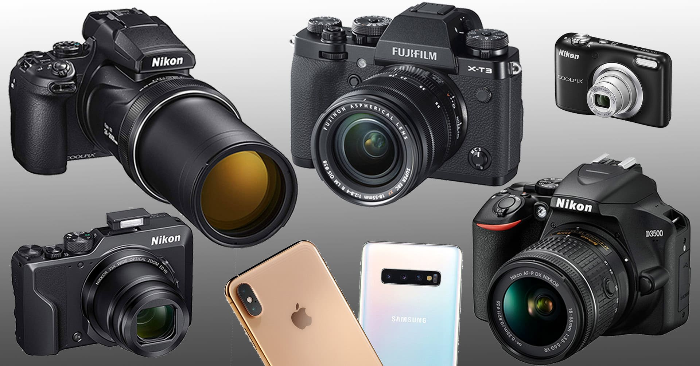
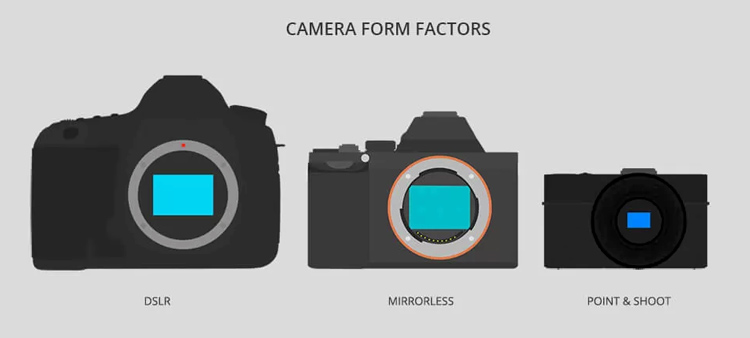
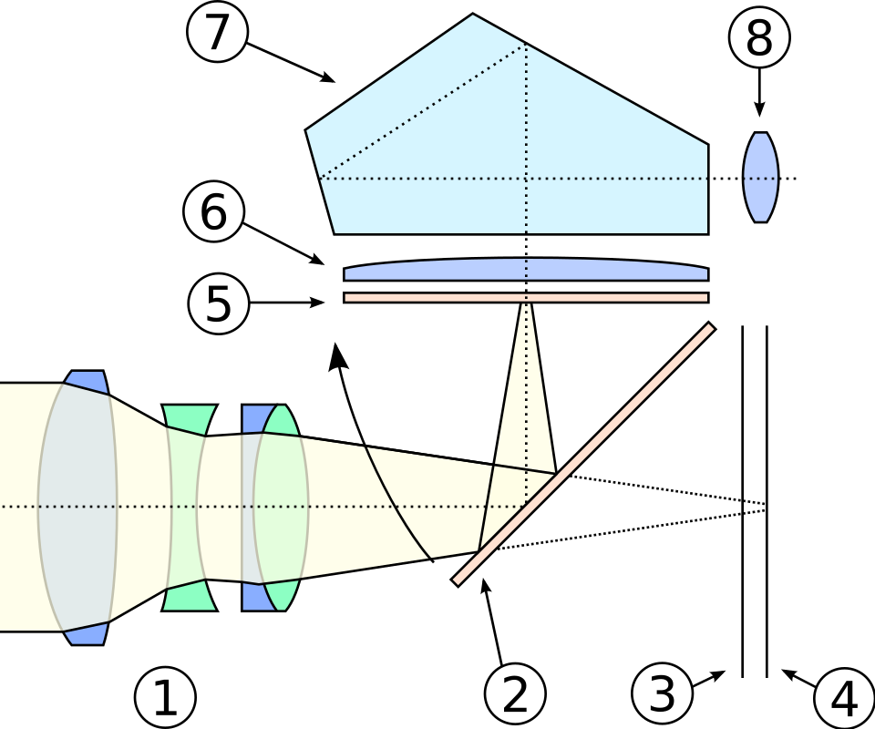
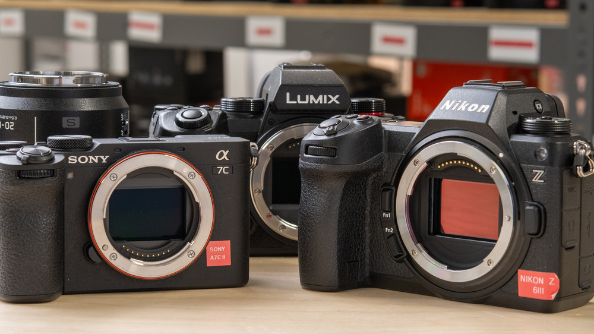
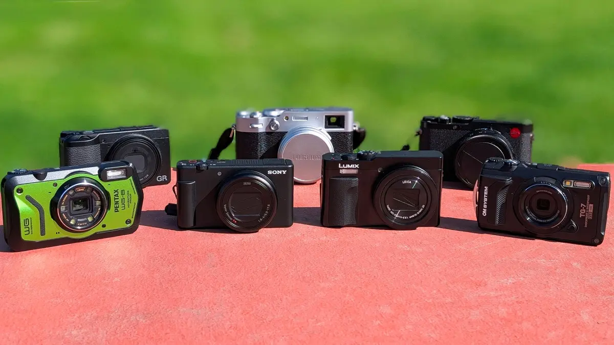
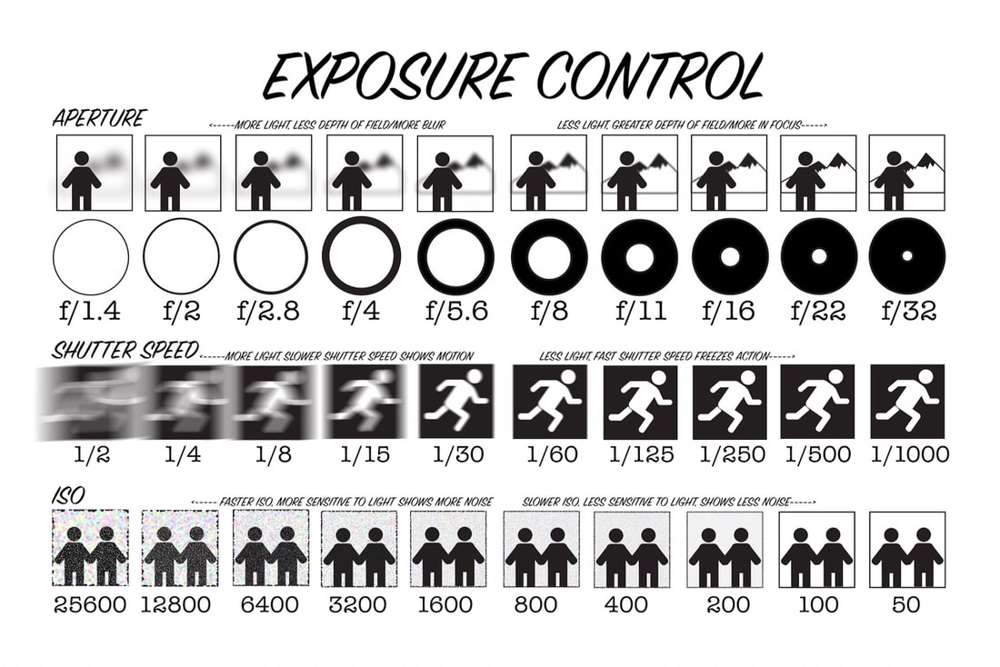

Introduction
Cameras have come a long way since their invention. From film cameras to digital cameras, the evolution of photography has been remarkable. In this article, we will explore the different types of cameras available today and their unique features.
A camera is an instrument used to capture and store images and videos, either digitally via an electronic image sensor, or chemically via a light-sensitive material such as photographic film. As a pivotal technology in the fields of photography and videography, cameras have played a significant role in the progression of visual arts, media, entertainment, surveillance, and scientific research.

Types of Cameras
There are several types of cameras available in the market today, each designed for specific purposes and user needs. The most common types include:
- DSLR Cameras
- Mirrorless Cameras
- Point-and-Shoot Cameras
Each type of camera has its own set of features and advantages. DSLR cameras are known for their versatility and image quality, while mirrorless cameras offer a more compact design without sacrificing performance. Finally, Point-and-shoot cameras are great for casual photography and personal memory making.

Differences Between Camera Types
Understanding the differences between various camera types can help you choose the right one for your needs. Each type has its own unique characteristics and is suited for different purposes.
DSLR Cameras
A digital single-lens reflex camera (digital SLR or DSLR) is a digital camera that combines the optics and mechanisms of a single-lens reflex camera with a solid-state image sensor and digitally records the images from the sensor.
The reflex design scheme is the primary difference between a DSLR and other digital cameras. In the reflex design, light travels through the lens and then to a mirror that alternates to send the image to either a prism, which shows the image in the optical viewfinder, or the image sensor when the shutter release button is pressed. The viewfinder of a DSLR presents an image that will not differ substantially from what is captured by the camera's sensor, as it presents it as a direct optical view through the main camera lens rather than showing an image through a separate secondary lens.

Mirrorless Cameras
Mirrorless cameras, as the name suggests, do not have a mirror mechanism. Instead, they use an electronic viewfinder or the rear LCD screen to compose images. They are generally more compact and lightweight than DSLRs, while still offering high image quality and interchangeable lenses.
Mirrorless cameras are known for their fast autofocus systems and the ability to shoot at higher frame rates. They are ideal for photographers who want a balance between portability and performance, making them suitable for a wide range of photography styles, from street photography to professional work.
Some popular mirrorless camera brands include Sony, Fujifilm, and Canon. These cameras have gained popularity among both amateur and professional photographers due to their versatility and advanced features.
Mirrorless cameras offer a great alternative to traditional DSLRs, providing excellent image quality and performance in a more compact form factor. They are suitable for photographers who value portability without compromising on the quality of their images.
Overall, the choice between DSLR and mirrorless cameras depends on individual preferences, photography style, and specific needs. Both types have their own advantages and can produce stunning images when used correctly. It is essential to consider factors such as size, weight, lens options, and budget when making a decision on which camera type to invest in for your photography journey.

Point-and-Shoot Cameras
A point-and-shoot camera, also known as a compact camera and sometimes abbreviated to P&S, is a still camera (either film or digital) designed primarily for simple operation. Most use focus free lenses or autofocus for focusing, automatic systems for setting the exposure options, and have flash units built in. They are popular for vernacular photography by people who do not consider themselves photographers but want easy-to-use cameras for snapshots of vacations, parties, reunions and other events..
Point-and-shoot cameras are designed for convenience and ease of use, making them ideal for casual photographers who want to capture moments without worrying about manual settings. They are typically smaller and lighter than DSLRs and mirrorless cameras, making them easy to carry around.
While point-and-shoot cameras may not offer the same level of control and image quality as DSLRs or mirrorless cameras, they are perfect for everyday photography and capturing memories.

Mechanics of Camera Operation
The mechanics of camera operation involve several key components working together to capture images. These include the lens, shutter, aperture, ISO, sensor, and image processor. Understanding how these parts function can help you get the most out of your camera.
The lens focuses light onto the camera's sensor, while the shutter controls the amount of time the sensor is exposed to light. The aperture adjusts the size of the lens opening, affecting depth of field and exposure. ISO determines the sensor's sensitivity to light, and the image processor converts the captured data into a digital image.
By mastering these mechanics, photographers can achieve greater control over their images, allowing them to create stunning photographs with the desired exposure, focus, and artistic effect.

Conclusion
Cameras have evolved significantly over the years, offering a wide range of options for photographers of all skill levels. Whether you choose a DSLR, mirrorless, or point-and-shoot camera, understanding the mechanics of camera operation and the differences between camera types can help you make an informed decision and enhance your photography experience.
As technology continues to advance, we can expect even more innovative features and improvements in camera design, making photography more accessible and enjoyable for everyone.